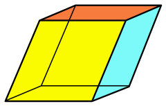

Bem vindo ao mundo do Romboedro

Um romboedro, também conhecido como sólido de Cleóstrato ou hexaedro romboidal, é um poliedro regular convexo com seis faces romboides congruentes, doze arestas iguais e oito vértices. É um dos 13 sólidos de Arquimedes, ou seja, um poliedro convexo cujas faces são polígonos regulares e cujas arestas têm o mesmo tamanho.
- Faces: As seis superfícies planas do romboedro, todas romboides congruentes
- Arestas: As doze arestas do romboedro, todas com o mesmo tamanho.
- Vértices: Os oito pontos onde as arestas do romboedro se interceptam.
- Ângulos diedros: Os ângulos formados por duas faces adjacentes do romboedro.
- Ângulos triedros: Os ângulos formados por três faces que se interceptam em um vértice do romboedro.
- Diagonais: Os segmentos de reta que unem pontos opostos do romboedro, não se cruzando em nenhum ponto.
- Volume (V): A medida do espaço interno do romboedro. O volume do romboedro pode ser calculado por diferentes fórmulas, como V = a³ / (6√2), onde a é a medida da aresta do romboedro.
- Área da superfície total (A): A medida da área total de todas as faces do romboedro. A área da superfície total do romboedro pode ser calculada por diferentes fórmulas, como A = 6a², onde a é a medida da aresta do romboedro.